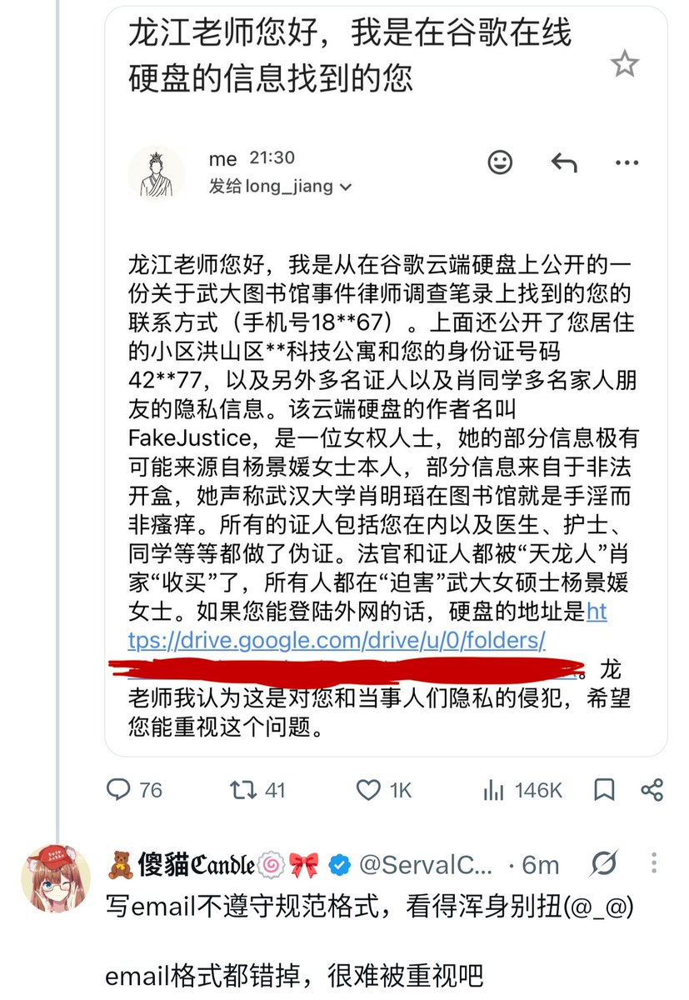

たたなこ
@tatanakots
@ServalCandle 我之前有开设一个检测某类ip地址的网站，说了数据库是我自己收集的，如果不准可以发邮件给我提交数据
收到只有一行字但是写了说明的也就算了
我收到过正文只有ip别的啥也没有的email
还有标题只写了ip正文再写一遍ip加上一个qq邮箱的签名然后别的啥也没有的

🧸傻貓ℭ𝔞𝔫𝔡𝔩𝔢🍥🎀
@ServalCandle
究竟是什么邮件让笨猫开始哈气了呢？
其实就是这个（
男权女权都无所谓我不在乎，这个邮件格式烂成这样看得我浑身别扭难受(@_@) https://t.co/N8Evc5XrhG https://t.co/aHxnSEVnV3